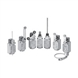
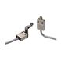
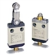
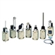
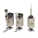
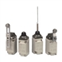

Building Automation
Industrial Automation
Power Automation & Safety


Bangladesh Distributor
General-purpose Vertical
A wide variety of Switches are available including environment-resistant models that are compact, thin, and durable, two-circuit models with spatter countermeasures, and four-circuit models with bifurcated contacts and a block-mounting system.
General-purpose Vertical List
There are 6 products of General-purpose Vertical.
 Two-circuit Limit Switch / Long-life Two-circuit Limit Switch WL-N / WLM-N
Select the Best Two-circuit Switch for the Operating Environment and Application from a Wide Range of Models
 Enclosed Switch D4C
Sealed, Compact, and Slim-bodied Switch Offers Choice of Many Actuators
 Miniature Limit Switch D4CC
Many Models Including Roller Lever Switches are Only 16-mm Thick with Connector
 Two-circuit Limit Switch/Long-life Two-circuit Limit Switch WL, WLM
Wide Range of Two-circuit Switches; Select One for the Operating Environment/Application
 General-purpose Limit Switch HL-5000
Economical, Miniature Limit Switch Boasting Rigid Construction
 General-purpose Limit Switch D4A-[]N
The Limit Switch with Better Seal, Shock Resistance, and Strength
Related Contents
- Limit Switches